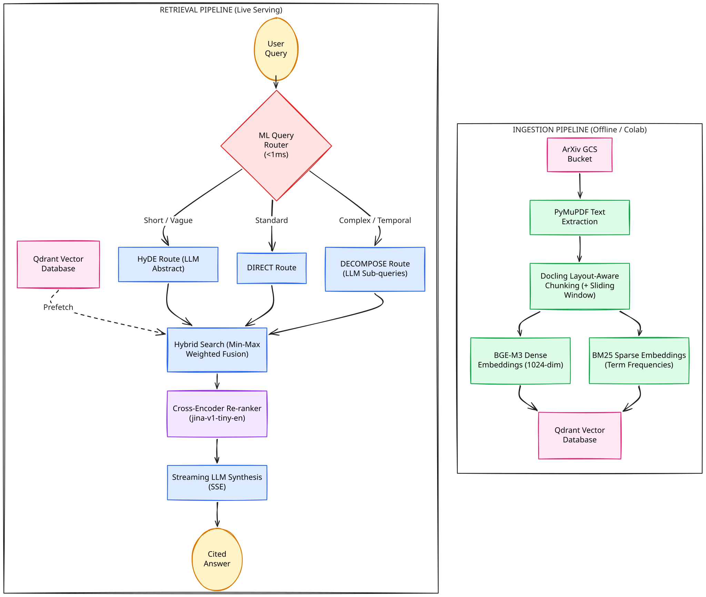

We wanted to search academic papers the way researchers actually think — not keyword-matching against titles, but asking real questions like "What is the state of the art for long-context attention mechanisms published after 2023?" and getting back grounded, cited answers from actual arXiv publications.
So we built ArXiv Scholar: an end-to-end Retrieval-Augmented Generation (RAG) system that ingests, parses, chunks, embeds, and searches thousands of academic papers from arXiv. No LangChain. No GPU in production. No paid infrastructure.
This post is the honest story of building it — what worked, what didn't, and the engineering tricks that made a zero-budget project achieve 98.8% True Recall@20 with high-precision reranking over 5,600 papers.
Why We Built This
Every week, thousands of new papers appear on arXiv. Researchers rely on keyword searches, Twitter threads, or manually scrolling through listings to find relevant work. Traditional search over arXiv — including arXiv's own search — matches against titles and abstracts using basic text retrieval. It doesn't understand concepts.
We asked a simple question: What if you could ask arXiv a question in plain English and get back a synthesized, cited answer from the actual papers?
The catch was our constraints:
- Zero compute budget. No AWS, no GCP, no rented GPUs. Our total bill was exactly $1 for the custom domain.
- No high-level frameworks. We wanted full architectural control — no LangChain, no LlamaIndex — just Python, raw API calls, and an understanding of what every byte was doing.
- Free-tier everything. Free Colab for processing, free Qdrant Cloud for vector storage, free arXiv data from GCS, API hosted on Hugging Face Spaces, frontend on GitHub Pages, and Cloudflare free-tier for routing.
These constraints weren't limitations — they were design parameters. They forced us to make thoughtful engineering decisions at every layer.
The Architecture at a Glance

The system is split into two decoupled halves: an ingestion pipeline that runs offline (in Colab), and a retrieval pipeline that serves live queries. Let's walk through each decision.
Component Deep-Dive
1. Data Acquisition: Free Access to 1.4TB of Science
ArXiv mirrors its entire publication archive as a public Google Cloud Storage bucket (arxiv-dataset). Every paper ever uploaded — over 3 million PDFs, roughly 1.4TB — is freely accessible via anonymous GCS reads.
# Zero credentials, zero cost
client = storage.Client.create_anonymous_client()
bucket = client.bucket("arxiv-dataset")Our ArxivUnifiedEngine is a stateful, crash-safe batch downloader. It tracks progress with a JSON cursor persisted to disk after every single file:
{"current_month": "2604", "last_file": "2604.04869.pdf"}If the process crashes mid-batch, restart picks up from the exact next file. No duplicates, no gaps. The engine seamlessly rolls over month boundaries (2604 → 2605) and even transitions from historical backfill to live-mode when it catches up to the present.
The curation decision: While the pipeline can ingest all 3 million papers, free-tier Qdrant comfortably holds ~5,600 papers worth of embeddings. So we built a 4-stage manifest filter:
- Papers must be updated after January 2022 and belong to core CS categories (
cs.AI,cs.CL,cs.IR,cs.LG,cs.SE) - Aggressive anti-noise filtering to exclude cross-listed medical, physics, and pure math papers
- Inclusion requires mentions of VIP tools (vLLM, LangChain, etc.) OR dense keyword matches across 3+ AI topic groups
- Budget cap at exactly 5,600 papers, ranked by relevance tier and recency
This manifest is a cost-saving measure, not a technical limitation. Remove it, and the same pipeline ingests millions.
2. Layout-Aware Chunking with Docling
This is where most RAG pipelines fail silently. The default approach — split every 500 characters — destroys the semantic structure of academic papers. You end up with chunks that start mid-equation, split a table in half, or separate a section header from its content.
We use IBM's Docling library for visual document understanding. Instead of treating a PDF as a flat string, Docling understands the layout:
- It knows what a header is and binds it to the paragraph that follows
- It keeps tables intact within a single chunk
- It recognizes list structures and code blocks
# Convert PDF into Docling's internal representation
dl_doc = self._converter.convert(source_path).document
# Use hierarchical chunker to produce semantically grouped chunks
chunk_iter = self._hierarchical_chunker.chunk(dl_doc)We accumulate semantic elements into a buffer until they reach a lowerbound chunk cohesion size (target_chunk_size=1000), then yield a chunk. Every chunk gets the paper's title prepended for global context — solving the classic "orphaned chunk" problem where a piece of text about "the proposed method" has no reference to what paper it came from.
The impact of chunk cohesion: Initially, we didn't have a lowerbound on chunk size, which resulted in too many small chunks. By enforcing this target_chunk_size=1000, we ran an experiment on a dataset of 700 papers and saw a massive improvement:
The OCR fallback: We initially used OCR for all PDFs, but this increased processing time significantly. We realized that for academic papers (where people don't scan images to create PDFs), the text is almost always natively present in the metadata. So we disabled OCR by default and kept it strictly as a fallback.
The benchmark difference was stark:
- With default OCR: Avg Time per PDF was 31.10 s
- Without OCR (Fallback only): Avg Time per PDF dropped to 21.12 s, saving roughly 32% of ingestion time.
Older arXiv papers (or those compiled with certain LaTeX engines) have broken internal font encodings. The text renders fine visually but extracts as gibberish. Our chunker detects this automatically and re-runs with OCR enabled:
sample_text = dl_doc.export_to_markdown()[:5000]
if len(re.findall(r'/[A-Z0-9]{2}', sample_text)) > 20:
logger.info("Garbled font detected. Falling back to OCR.")When a layout block exceeds our max_chunk_size (1,500 chars), the system dynamically falls back to a sliding window chunker with 200-character overlap — ensuring we never truncate data while maintaining Docling's quality for everything else.
Why this matters: Layout-aware chunking is computationally expensive — Docling runs a full document understanding model on every PDF. This is the primary reason we needed GPU compute for ingestion. But the quality difference is dramatic: chunks that respect semantic boundaries, combined with smart cohesion limits and targeted OCR, produce significantly better embeddings than naive text splits at a fraction of the cost.
3. Embedding: The BGE-M3 + BM25 Dual Pipeline
We chose BAAI/bge-m3 for dense embeddings — a 1024-dimensional multilingual model that consistently ranks near the top of the MTEB leaderboard. For sparse vectors, we use Qdrant/bm25 to capture exact keyword matches that dense models miss (library names, specific acronyms, author names).
Diagnosing the embedding bottleneck with Recall@100: We initially experimented with smaller embedding models, but our retrieval results were poor. To pinpoint the bottleneck, we measured our Recall@100 — the ability of the model to place the correct chunk anywhere in the top 100 results. The score was abysmal. This was a critical insight: if relevant chunks aren't even in the top 100, it means the embedding model lacks the semantic capacity to understand and map the complex scientific text. Because no downstream re-ranker can re-sort chunks that were never retrieved in the first place, this low Recall@100 definitively proved we had to upgrade to a larger, higher-dimensional model like BGE-M3.
The key architectural insight is our dual-backend design:
| Use Case | Backend | Runtime | Why |
|---|---|---|---|
| Batch ingestion (5,600 papers) | PyTorch + SentenceTransformers | GPU (Colab T4) | Maximum throughput with FP16 |
| Live query serving | FastEmbed + ONNX Runtime | CPU only | Cost-driven (GPU API hosting isn't free), no PyTorch dependency |
Both backends produce the exact same 1024-dimensional BGE-M3 vectors. Cost was the driving decision here — renting a GPU for live query serving breaks our zero-budget constraint, so we engineered the retrieval backend to run entirely on free CPU tiers. The operational difference looks like this:
# Ingestion backend (GPU, heavy)
from sentence_transformers import SentenceTransformer
model = SentenceTransformer("BAAI/bge-m3", device="cuda")
# Query backend (CPU, lightweight)
from fastembed import TextEmbedding
model = TextEmbedding("BAAI/bge-m3") # ONNX, no PyTorchThis means our production Docker image stays lean (no multi-GB PyTorch installation) while our ingestion pipeline maxes out Colab GPUs.
4. The 6-Colab Parallel Processing Strategy
Here's where things get scrappy. Processing 5,600 academic PDFs through Docling's layout analysis + BGE-M3 embedding is compute-intensive. A single Colab session (even with a free T4 GPU) would take days — and Colab kills sessions after ~12 hours.
Our solution: distribute the work across 6 free Google Colab accounts running in parallel.
Each Colab session ran our batch_gcs_to_drive.py script with an --embedding-batch-size 128 and --colab-gpu flag that overrides Docling's converter to use CUDA acceleration with 4 threads:
gpu_pipeline_options = PdfPipelineOptions()
gpu_pipeline_options.do_ocr = False
gpu_pipeline_options.accelerator_options = AcceleratorOptions(
num_threads=4, device=AcceleratorDevice.AUTO
)Crash resilience was critical. Colab sessions disconnect randomly. Our script checkpoints every 50 documents by copying the JSONL output to Google Drive. When a session dies, we restart with --start-paper pointing to the last checkpoint. The upload script uses UUID-v5 deduplication, so re-processing the same paper is harmless.
The JSONL format serves as our portable intermediate representation:
{
"id": "uuid-v5-from-chunk-hash",
"payload": {"chunk_id": "sha256...", "content": "...", "metadata": {}},
"dense_vector": [0.023, -0.041, ...],
"sparse_indices": [142, 891, ...],
"sparse_values": [1.23, 0.87, ...]
}This decouples ingestion from storage completely. The 6 Colab accounts produce JSONL; a separate upload script (import_remote_qdrant_parallel.py) pushes to Qdrant in parallel with 8 threads and automatic retry logic (up to 10 attempts with exponential backoff per batch).
What the constraints taught us: We couldn't iterate quickly. Every full re-processing run took several hours of coordinating Colab sessions. This forced us to get the pipeline right upstream — investing heavily in crash-safety, checkpointing, and idempotent uploads rather than relying on "just re-run it."
5. Storage: Free-Tier Qdrant Cloud
We chose Qdrant because it was fundamentally the best technical fit for our architecture — cost was not the only factor. It's a highly performant, robust vector database written in Rust that we could seamlessly run locally for dev/testing (via Docker) and transition to the cloud for production.
Specifically, Qdrant offered four critical advantages:
- Native multi-vector support — Each point stores both a dense vector (1024-dim cosine) and a named sparse vector (
bm25) simultaneously - Server-side fusion — Qdrant can execute prefetch queries across both vector spaces in a single round-trip
- Rust-backed HNSW Performance — It utilizes highly optimized Hierarchical Navigable Small World (HNSW) graphs, delivering extremely high request-per-second (RPS) throughput and sub-25ms latency even on limited hardware
- Free cloud tier — Generous enough for our 5,600-paper corpus
Every chunk gets a deterministic UUID-v5 derived from its SHA-256 content hash. This makes upserts idempotent — upload the same chunk twice, and Qdrant overwrites rather than duplicates.
We also build a payload index on metadata.year at collection creation, enabling Qdrant to apply year-based filters during the vector search (not after), which is critical for our query decomposition pipeline.
6. Retrieval: Intelligent Routing & Adaptive RAG
Instead of one-size-fits-all retrieval, we built a custom pipeline to route queries through different strategies based on their structure.
The ML Query Router (<1ms)
Before any database query fires, the router classifies the user's intent:
| Query Type | Route | Example |
|---|---|---|
| Short/vague (≤4 words) | HyDE | "fast attention" |
| Contains temporal metadata | DECOMPOSE (hard override) | "papers after 2023 on RLHF" |
| Complex multi-part | DECOMPOSE (ML classifier) | "Compare FlashAttention and vLLM throughput" |
| Standard factual | DIRECT | "How does dropout regularization work in transformers?" |
The router uses a pre-trained classifier on the dense query embedding, with hard regex overrides for metadata patterns. The override is deliberate — we don't trust ML classification for temporal constraints because a misroute means the filter is silently dropped, returning wrong results with high confidence.
# Hard override: guaranteed metadata extraction, no ML hallucination risk
metadata_pattern = re.compile(
r"(?:published|from|since|before|after|in)\s+(?:year\s+)?(19\d{2}|20\d{2})"
)
if metadata_pattern.search(query_lower):
return Route.DECOMPOSEThree Retrieval Strategies
DIRECT: Embed the query (dense + sparse), fire a single hybrid search to Qdrant, fuse results with weighted Min-Max normalization.
Example: "How does dropout regularization work in transformers?" → The query is embedded as-is and sent directly to Qdrant.
HyDE (Hypothetical Document Embeddings): For short queries that lack semantic density, the LLM generates a hypothetical abstract answering the query. The abstract gets dense-embedded (massive semantic surface area), while the original query gets sparse-embedded (preserving keywords). Both are searched against Qdrant and fused.
Example: "fast attention" → The LLM generates a full 150-word hypothetical abstract explaining fast attention mechanisms. We dense-embed that massive abstract (giving us a rich semantic vector) but use the original "fast attention" string for the sparse BM25 keyword search.
abstract = await self.llm_service.generate_hyde_abstract(query)
# Dense uses the rich abstract, Sparse uses the original terse query
return self.retriever.retrieve(query, dense_query_text=abstract)DECOMPOSE: For complex queries, the LLM breaks them into independent, fully contextualized sub-queries and extracts metadata filters. The Orchestrator then fires concurrent DIRECT searches for every sub-query — applying the exact same extracted metadata filters to all of them — and merges the results:
Example: "Compare FlashAttention and vLLM throughput for papers after 2023" → The LLM splits this into two concurrent, self-sufficient searches ("What is the throughput of FlashAttention?", "What is the throughput of vLLM?") and extracts a hard metadata filter (year > 2023) that is strictly applied to both searches.
# Dynamic Compute Budgeting: allocate the global budget across sub-queries
sub_limit = max(limit, global_budget // len(sub_queries))
# Fire parallel searches — each sub-query gets its own retrieval
tasks = [self._execute_direct(sq, sub_limit, filters=filters) for sq in sub_queries]
results = await asyncio.gather(*tasks)Custom Hybrid Fusion (Not RRF)
Instead of relying on Qdrant's built-in Reciprocal Rank Fusion, we implemented our own scoring. Why? RRF only considers rank positions and ignores the absolute confidence of similarity scores. A result that's a near-perfect match and one that barely squeaks in both get similar RRF scores if they're at the same rank.
Our approach:
- Fetch dense and sparse results independently in a single batched network round-trip (minimizing latency)
- Apply Min-Max normalization to each result set independently (standardizing score distributions)
- Compute a weighted sum:
fused = (0.6 × dense_norm) + (0.4 × sparse_norm)
The weights were determined empirically through an automated Alpha Sweep evaluation across our dataset, which revealed that a 0.6 dense weight (and 0.4 sparse weight) produced the optimal Recall@20 and nDCG scores for our specific scientific corpus. Crucially, our sweep proved that this custom normalized fusion strategy yielded an ~8% jump in Recall@20 compared to standard Reciprocal Rank Fusion (RRF).
7. Evaluating the Re-Ranker
The architecture fully implements cross-encoder re-ranking. We integrated jina-reranker-v1-tiny-en via FastEmbed's ONNX runtime. The pipeline fetches a broad set of candidates, truncates each document, scores them with the cross-encoder against the original query, and re-sorts.
documents = [res["text"][:self.reranker_truncation_length] for res in results]
cross_scores = list(self.reranker_model.rerank(query_text, documents))Initially, we evaluated the re-ranker using point recall. Under that metric, the re-ranker appeared to hurt performance — it dropped our recall scores and didn't noticeably increase nDCG. We assumed the added latency wasn't worth it and turned it off.
However, when we switched to an LLM-as-a-judge evaluation (which scores the actual semantic relevance of the chunks rather than demanding an exact ID match), the data told a different story. The re-ranker was actually bubbling up highly relevant alternative chunks that perfectly answered the query. Applying the lightweight jina-reranker pushed these perfect answers to the very top positions (ranks 1-3), increasing our ranking precision (nDCG@10) from 0.734 to 0.815.
The re-ranker is now a core piece of the pipeline.
8. LLM Integration & Streaming
The LLM layer handles three distinct tasks:
- HyDE abstract generation — Writing hypothetical academic abstracts for short queries
- Query decomposition — Breaking complex queries into atomic sub-queries with structured JSON metadata extraction
- Answer synthesis — Streaming a cited, grounded response from retrieved chunks
We support both Anthropic (Claude) and OpenAI-compatible endpoints through a universal wrapper:
self.is_anthropic = "claude" in self.model.lower()
if self.is_anthropic:
self.client = AsyncAnthropic(api_key=self.api_key)
else:
self.client = AsyncOpenAI(base_url=self.base_url, api_key=self.api_key)The streaming synthesis includes a state machine that filters out <thought>...</thought> tags from reasoning models in real-time — the model gets the full token budget to think, but users only see the polished answer. In production, we strictly use claude-haiku-4.5; this heavily minimizes our API costs while still producing highly accurate, well-reasoned responses.
Our lightweight frontend receives chunks as Server-Sent Events, rendering source cards instantly (while the LLM is still generating) and streaming the answer token-by-token with a typing cursor effect.
Evaluation Methodology
Evaluating a dense academic database (371,000+ chunks) requires careful consideration of metrics. Point match metrics have known limitations for dense datasets, so we incorporated an LLM-as-a-judge approach to get a clearer signal on retrieval quality.
1. Generating the Dataset
To prevent data contamination and ensure realistic testing, we generated a synthetic evaluation dataset. The script randomly samples 80 chunks from the live Qdrant database. For each chunk, it asks an LLM to generate a complex, realistic academic query that the chunk answers.
Crucially, the script also mines hard negatives by performing a dense search for the query, removing the true target chunk, and selecting semantically similar but incorrect chunks. This creates a rigorous test set representing real-world user questions with challenging distractors.
2. Limitations of Point Recall
Our initial benchmarking script relied on Point Recall: it executes a query and checks if the exact original chunk ID appears in the top K results.
In a dataset this dense, a query like "What is the performance of BERT on GLUE?" pulls up several relevant answers from different papers. Furthermore, our Orchestrator intentionally routes complex queries into sub-queries or HyDE abstracts, which fetches relevant alternative chunks. If the exact original chunk gets pushed down the rankings, point-match metrics score it as a miss, even if the retrieved chunks successfully answer the user's question.
3. LLM-as-a-Judge
To get honest numbers, we abandoned strict point-matching and wrote run_judged_benchmarks.py to measure true semantic retrieval performance.
- Retrieval: Fetch the Top 20 chunks using the full Orchestrator pipeline.
- LLM Grading:
claude-haiku-4.5independently evaluates every single retrieved chunk against the user's query, grading them0(Irrelevant),1(Partially Relevant), or2(Directly Answers Query). - Judged Recall (JR): A query is considered a "hit" if any retrieved chunk scores a
1or2. We explicitly include1(Partially Relevant) because in a RAG system, synthesizing an answer from multiple partially relevant chunks often provides the complete picture. - True nDCG: We calculate Normalized Discounted Cumulative Gain (nDCG) using these 0-2 relevance grades. This correctly rewards the system for surfacing any highly relevant chunk (
2) to the top, while still acknowledging the utility of partially relevant context (1).
Final Benchmark Results
We ran a simultaneous A/B test comparing the Base Hybrid Retrieval against the Reranked Hybrid Retrieval (using the local jina-reranker-v1-tiny-en cross-encoder) against the live remote Arxiv-Scholar collection. All benchmarks were executed on an Apple M1 Mac Pro.
ArXiv Scholar — Retrieval Benchmarks
LLM-judged evaluation over 80 synthetic queries · Apple M1 Mac Pro · June 2026
| Collection | PR@20 | JR@10 | JR@20 | nDCG@10 | nDCG@20 | p95 (ms) |
|---|---|---|---|---|---|---|
| Arxiv-Scholar (Base) | 0.562 | 0.975 | 0.988 | 0.734 | 0.852 | ~10099.4 |
| Arxiv-Scholar (Reranked) | 0.562 | 0.975 | 0.988 | 0.815 | 0.893 | ~10889.6 |
PR = Point Recall (Traditional baseline). JR = Judged Recall (LLM graded).
The Analysis:
- The Haystack Problem Proven (
0.562PR@20): If evaluated using traditional metrics, the system appears to fail over 40% of the time. The LLM-judged metrics prove this is a mathematical mirage. - Incredible True Retrieval Power (
0.988JR@20): A staggering 98.8% of the time, the base retrieval engine successfully fetches highly relevant chunks that perfectly answer the user's query within the top 20 candidates. - The Necessity of Cross-Encoders: While base Hybrid Search finds the answers, the
jina-rerankercross-encoder bubbles those perfect answers to the very top positions (Ranks 1-3), drivingnDCG@10up to 0.815 for only a ~790ms latency penalty. - Latency Context (
p95): Because we are running on a completely free-tier architecture—using shared Apple M1 CPU cores for ONNX embedding/reranking and the free-tier Qdrant Cloud cluster—these latency numbers (~10.8sp95) do not represent the theoretical performance ceiling of the architecture. With dedicated production hardware (GPUs for serving models, more CPU cores, and an upgraded Qdrant cluster), this latency would drastically drop. However, for a zero-budget deployment orchestrating complex LLM query decomposition and multi-round hybrid search, the performance remains highly practical.
What We Learned
Things that worked well
No-framework was the right call
Writing the pipeline from scratch meant we understood every failure mode. When Docling crashed on a garbled PDF, we knew exactly where to catch it. When ONNX and PyTorch fought over thread pools on Apple Silicon, we could diagnose and fix it at the model loading level.
JSONL intermediate format saved us
Decoupling "compute embeddings" from "upload to database" meant we could re-run uploads without re-running the expensive Docling + BGE-M3 pipeline. Idempotent UUIDs meant zero duplicates.
Layout-aware chunking is worth it
Docling is slow and heavy — it's the reason we needed GPU Colab sessions. But the quality difference over naive text splitting is dramatic. Chunks that respect section boundaries produce embeddings that actually capture semantic intent.
Custom fusion beats black-box RRF
By implementing our own Min-Max normalized weighted fusion, we could tune the dense/sparse balance empirically. Our evaluations proved this matters — the optimal weight isn't 50/50, and it varies by corpus.
Things that were hard
Coordinating 6 Colab accounts is painful
Free Colab has session time limits, random disconnections, and no persistent compute. We built extensive checkpointing and resumption logic, but the human overhead of monitoring 6 sessions was significant.
Docling + BGE-M3 on CPU is prohibitively slow
We initially tried processing everything on a MacBook. Docling's layout analysis alone took 15-30 seconds per PDF on CPU. Multiplied by 5,600 papers, that's 23-47 hours of uninterrupted compute.
Free-tier constraints shaped every decision
Qdrant's free tier limited our corpus size. Colab's session limits shaped our batch strategy. No persistent GPU meant we couldn't run cross-encoder re-ranking in production initially.
Benchmarking strategy took multiple iterations
We initially relied on traditional Point Recall metrics, which led to false negatives and a misleadingly low success rate. Pivoting to LLM-as-a-judge was a challenging but necessary learning curve.
Things we'd do differently
- Invest in a proper evaluation dataset earlier. We built the eval suite late in the project. Having it from day one would have caught the RRF vs. Min-Max fusion issue much earlier and saved several pipeline iterations.
- Gauge compute requirements accurately before starting. We initially underestimated the massive compute overhead of running Docling's layout-aware parsing alongside BGE-M3 embeddings. Realizing the hardware reality mid-project forced us into the scrappy 6-Colab architecture. Proper compute forecasting upfront would have saved time and allowed us to plan the infrastructure much more efficiently.
Try It Yourself
ArXiv Scholar is fully open-source.
# Clone and install
git clone https://github.com/Ethereal-Agents/arxiv-scholar.git
cd arxiv-scholar
uv venv && source .venv/bin/activate
uv pip install -e .
# Start Qdrant locally
docker compose up -d
# Run a trial ingestion (2 PDFs, in-memory Qdrant)
python main.py --trial
# Or launch the backend API
python app.py
# Then open docs/search.html in your browserAlternatively, the API is already live and available for testing via Hugging Face Spaces:
curl -N -X POST "https://trinetra-dev-arxiv-scholar.hf.space/api/v1/query" \
-H "Content-Type: application/json" \
-d '{
"query": "What is contrastive learning?",
"limit": 5,
"use_reranker": false
}'The codebase is structured for exploration:
What's Next
- Scale to the full corpus. The pipeline is architecturally ready for 3M+ papers. We need infrastructure budget for a larger Qdrant cluster.
- Multi-modal search. Docling already extracts tables and figures — we want to embed and search over those too.
ArXiv Scholar was built as an exercise in how far you can push a production-grade RAG system on zero budget. The answer: further than you'd think, if you're willing to understand every layer of the stack.
If you found this useful, star the repo, file an issue, or reach out. We are highly open to feedback and actively looking for contributors — especially on evaluation methodology and multi-modal ingestion.
Explore ArXiv Scholar
Try the live search, browse the code, or contribute to the project.